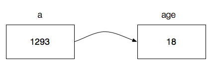
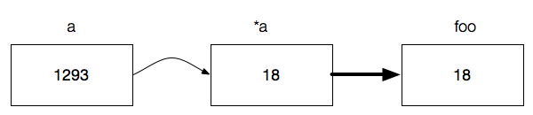

Pointers in C++
Overview
- Pointers
- Memory Addresses
- Pointer Arithmetic
- Pointer and Arrays
- Memory Managementnew, deleteDestructor
thisPointer
What is a pointer?
A pointer references a location in memory, and obtaining the value at the location a pointer refers to is known as dereferencing the pointer. (Wikipedia)
int age = 27;
age- contains 4 bytes (32 bits)
- and forms the value 27

Pointer declaration
- A pointer can directly access the value of the memory it's pointing to. Therefore it has to be specified the data type it's pointing to
Pointer declaration: type * variable_name;
int* p1 = NULL; char* p2 = NULL; float* p3 = NULL; double* p4 = NULL;
- The asterisk (*) means that the variable is a pointer, don't confuse it with the dereference operator.
- Always declare a pointer with an initial value (NULL), otherwise it points to an arbitrary address.
What is a pointer?
int age = 27; int* a = &age;
- Reference the memory location of a variable with reference operator
& - Pointer variable precedes with an asterisk
*
a- is the memory address where the value of the variable age is stored
- has a different value than the variable age (since it references the memory location) - in this case 8

What is a pointer? - Examples
int age = 18; int* a = &age; // Get the reference
The size of a pointer depends on the operating system - get the size of a variable in bytes with sizeof()
cout << sizeof(age) << " bytes" << endl; // Output: 4 bytes cout << sizeof(a) << " bytes" << endl; // Output on 64-bit machine: 8 bytes
Dereference Operator *
int age = 18; int* a = &age; |  |
int foo = *a; |  |
Dereference the pointer to get the value in memory, where the pointer points to
- Precede the pointer's identifier with an asterisk
* - Operand has to be a pointer variable
Pointer Examples
int age = 30; int height = 180; int* p1, * p2 = NULL; // Initializing p1 = age; // Compiler error, variables have different size p1 = &age; // "p1" points to the address of "age" p2 = p1; // Correct (both have the same size), p2 points to the address of p1 *p2 = height; // Dereference "p2" and assign the value of "height"
Keep in mind that
- by dereferencing the pointer you have direct access to the values
- declaring a pointer looks very similar to dereferencing a pointer, but they are not the same
- you should always declare a pointer with an initial value
0, NULL, null, nil
Pointer Examples
int firstvalue = 5, secondvalue = 15; int* p1, *p2; p1 = &firstvalue; // p1 = address of firstvalue p2 = &secondvalue; // p2 = address of secondvalue *p1 = 10; // value pointed by p1 = 10 *p2 = *p1; // value pointed by p2 = value pointed by p1 p1 = p2; // p1 = p2 (value of pointer is copied) *p1 = 20; // value pointed by p1 = 20 cout << "firstvalue is " << firstvalue << endl; cout << "secondvalue is " << secondvalue << endl;
Pointer Arithmetic
Addition and subtraction operations are allowed on pointers
- If a pointer is incremented by one it points to the following element of its type in memory
- The size in bytes of the pointer type is added to the pointer
- Behavior of a pointer operation depends on the size of a pointer's data type
Pointer Examples
int a = 30; int* p1 = &a;
p1 points to the address of
a
p1++; // Increases the pointer by one unit (in this case 4 byte)
p1 points to the last address + 4 bytes
p1--; // Decreases the pointer by one unit
p1 now points to the address of
a again
Pointer and Array
Identifier of an array is equivalent to the address of its first element
int array[5]; int* p = array; int* p = &array[0] *p = 1; // == array[0] p++; // increase pointer address by 4 bytes *p = 2; // == array[1] *(p + 3) = 5 // == array[4]
array = p;
Pointer Arithmetic
The precedence of the operators depend on the position and brackets
int array[5]; int* p = array; *p++ = 3; // first dereference and assign value, then increase pointer *(p+1) = 3; // add 4 bytes to pointer, dereference, assign value *++p = 4 // increase pointer value, dereference and assign int a = *++p; // increase pointer value, dereference and assign int b = *p++; // dereference, assign, increase pointer value
Pointer Arithmetic
Behaviour of a pointer operation depends on the size of a pointer's data type
short* sp = (short*)array; // short has 2 bytes *sp = 10; // 0000 0000 0000 1010 // Increase by 2 bytes *(sp+1) = 20; // 0000 0000 0001 0100
Use a short pointer (2 byte) to access the memory, which then forms an integer of value 1.310.730
| byte 4 | byte 3 | byte 2 | byte 1 |
|---|---|---|---|
| 0000 0000 | 0001 0100 | 0000 0000 | 0000 1010 |
Pointer to Pointer
Add an asterisk (*) for each level of reference in the declaration
char c = 'a'; char* pC = &c; char** ppC = &pC; // Dereferencing *ppC; // reference to pC **ppC; // reference to c
pCis a pointerppCis a pointer to a pointer
The void Pointer
voidpointers are a special type of pointers, in C++ they represent the absence of type- They have an undetermined length and undetermined dereference properties
- Therefore they have to be cast to a concrete pointer type
int a = 100; void* pA = &p; *pA = 101; // Compiler error: 'void*' is not a pointer-to-object type *(int*)pA = 101; // Cast before dereference
Dynamic Memory
- Until now we have only had as much memory available as we declared for our variables
- Memory consumption is known at compile time
- What if we need a variable amount of memory (determined during runtime)?E.g. array with a user defined size
Answer: Dynamic Memory
Allocate dynamic memory on the heap with the keyword new and multiple elements with
new[]
Dynamic Memory
Memory allocation on the heap:
type * variable_name = new type;
type * variable_name = new type [ size ];
int* pInt = new int; int *pIntArray = new int[10]; Rectangle* pRectangle = new Rectangle; Rectangle* pRectangles = new Rectangle[10];
Accessing Dynamic Memory
int* pInt= new int; char* pChar = new char; Rectangle* pRectangle = new Rectangle(10, 10); *pInt = 27; *pChar = 'z';
pRectangle->getWidth(); // Use of arrow operator (*pRectangle).getWidth(); // Dot notation
Accessing Dynamic Memory
Index operator can be used on arrays
int* pInt= new int[100]; Rectangle* pRect = new Rectangle[10]; pInt[10] = 103; pRect[0] = Rectangle(10, 10); // constructor call pRect[2] = Rectangle(100, 100); Rectangle rect = pRect[0]; int x = rect.getX(); pRect = pRect + 2; rect = *pRect; x = rect.getX();
A program's memory
First an overview about the 4 different areas of a program's memory
- Code areawhere the compiled program sits in memory.
- Globals areawhere global variables are stored.
- Heapwhere dynamically allocated variables are allocated from.
- Stackwhere parameters and local variables are allocated from.
The memory is allocated based on how a variable is declared.
Memory Management - The stack
Stack is the place in memory where parameters and local variables are allocated, the stack is often referred as execution stack, control stack, run-time stack, or machine stack
In general, a stack is a container which holds items (like an array). You put items into the container (push) or take them down from it (pop).
Compared to an array, the stack only let's you access the last item put into/onto it. A stack is a last-in, first-out (LIFO) structure.
Memory Memory - The stack
The memory on the stack is automatically cleaned up when the code block has returned.
int increment(int a){
int b = ++a;
return b;
} // after returning the value, the stack is cleaned up
You don't have to worry about memory allocation which is always nice!
Memory Management - The heap
The heap is a large pool of the memory, which is used for (dynamically allocated) objects created with the keyword new
int* pB = new int; // Memory is on the heap int a = 10; // Memory of "a" is allocated on the stack int pA = &a; // Memory of "pB" is allocated on the stack
Dynamically allocated memory "survive" code blocks, but not the variables
Dynamically allocated memory has to be freed by the programmer (no garbage collector)
Memory Management - The heap
Programmer has to decide when to free memory when it is no longer needed
- Memory becomes available for other allocation requests
- Memory can be freed with the
deleteordelete[]operator - Argument is a pointer to a memory block previously allocated with
new
int* pB = new int; int* pArray = new int[10]; ... delete pB; delete[] pArray;
Memory Management - Leaks
Memory leaks occur when there is memory allocated, to which you don't have access to.
Good memory management is important!
When do you clean up memory?
- When the variable is no longer needed
- As long as you have access to it
The destructor is a good place to free memory!
Memory Management - Leaks
void print(int value){
int* b = new int;
cout << value;
}
print(10);
Variable b is deleted after the return of the function, but the memory is still allocated, you don't have access to the variable outside of the function
Memory Management - Leaks
void print(int value){
int* b = new int;
cout << value;
delete b;
}
print(10);
Delete the memory as long as you have access to!
Memory Management - Leaks
int* newIntegerWithValue(int value){
int* b = new int;
*b = value;
return b;
}
int* integer = newIntegerWithValue(10);
...
delete integer;
After returning the function, you still have access to the dynamically allocated memory
Use the stack when your variable will not be used after the current function returns. Use the heap when the data in the variable is needed beyond the lifetime of the current code block.
Back to dynamic memory
class Rectangle{
int _x, _y, _width, _height;
char* _pixels;
public:
Rectangle(int x = 0, int y = 0, int width = 0, int height = 0){
_x = x;
_y = x;
_width = width;
_height = height;
// Dynamic memory allocation
_pixels = new char[_width*_height];
}
~Rectangle(){
delete[] _pixels;
}
};
Free dynamically allocated memory for the variable _pixels in the destructor.
Memory Management - Destructor
{
Rectangle rect(10, 10, 400, 300);
} // Automatically cleans up stack memory and calls destructor
Rectangle* pRect = new Rectangle(10, 10, 400, 300);
delete pRect; // Cleans up heap memory and calls desctructor
Destructor is automatically called
- on local variable when declaration scope is left
- on dynamically allocated objects when delete is called
- on statically allocated objects when program is terminated
- on every array element, if an array is destroyed
The this Pointer
In a non-static context, this is a pointer to the 'current' object
Any plain (unqualified) reference to a non-static member is implicitly extended to a qualified reference by adding this
- var -> this->var
- func(...) -> this->func(...)
The this pointer is not available in static member functions!
The this Pointer
class Rectangle{
int _x, _y, _width, _height;
public:
Rectangle(int x = 0, int y = 0, int width = 0, int height = 0);
void setWidth(int width);
};
// Implementation
Rectangle::Rectangle(int x = 0, int y = 0, int width = 0, int height = 0){
this->_x = x;
this->_y = x;
this->_width = width;
this->_height = height;
}
void Rectangle::setWidth(int width){
this->_width = width;
}
Objects vs. Pointers to Objects
Object values may become unhandy
- It is costly to copy full objects
- Objects should be mainly passed to functions by reference
- Use of reference parameters in method declarations is recommended
- Otherwise the copy constructor is invoked on each function call with an object as argument to create a temporary copy of the object
Objects vs. Pointers to Objects
Object pointers are frequently preferred
- It is cheap to copy pointers to objects
- Objects referenced by pointers should be created on the heap by new
- Such objects must be explicitly destroyed by delete, otherwise 'memory leaks' will arise in the program. Destructors of objects must explicitly free the space of all objects referenced by pointers
Namespaces
Namespaces allow to group entities like classes, objects and functions under a name.
namespace first{
int a, b;
}
variables a and
b are declared within a namespace
first
access these variables from outside the namespace we have to use the scope operator ::
first::a; first::b;
Namespaces
namespaces are useful in the cases that global object or function uses the same identifier as another one, which otherwise causes redefinition errors
namespace first{
int var = 5;
}
namespace second{
double var = 3.1416;
}
int main () {
cout << first::var << endl;
cout << second::var << endl;
return 0;
}
Namespaces - Using
keyword using is used to introduce a name from a namespace
namespace first{
int x = 5;
int y = 5;
}
namespace second{
double x = 3.1416;
double y = 3.1416;
}
int main () {
using first::x;
using second::y;
cout << x << endl; // first::x
cout << y << endl; // second::y;
return 0;
}
Namespaces - Using namespace
use using namespace to introduce an entire namespace
namespace first{
int x = 5;
int y = 5;
}
namespace second{
double x = 3.1416;
double y = 3.1416;
}
int main () {
using namespace first;
cout << x << endl; // first::x
cout << y << endl; // first::y;
return 0;
}
Classes in Namespaces
Group classes with namespaces
namespace Graphics{
class Rectangle{...};
}
Graphics::Rectangle* rectangle new Graphics::Rectangle();
Declare namespace in different files
// Rectangle.h
namespace Graphics{
class Rectangle{...};
}
// Circle.h
namespace Graphics{
class Circle{...};
}
/